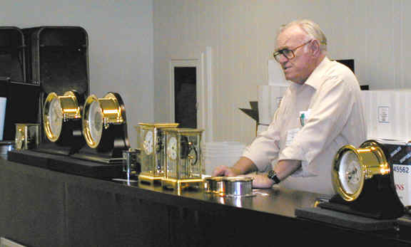
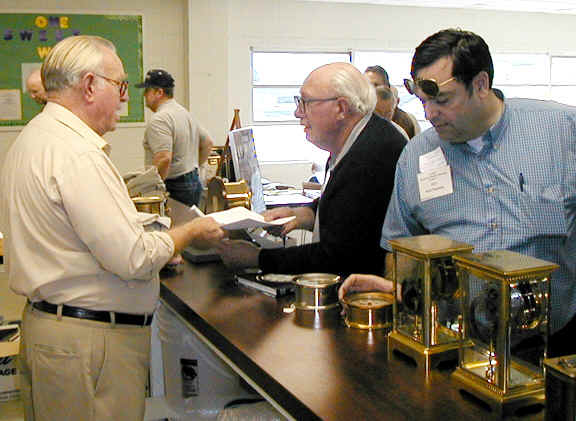
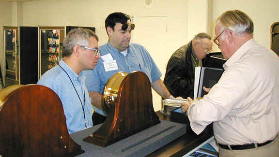

The History of Chelsea Clocks
This is an archived report. Meeting places, times and people have changed since it was written. See Meetings for current details.
Our January 11th meeting was held as usual at the Boys & Girls Club. The Club held a fund raiser crab feed the night before requiring a number of Chapter members to show up early Sunday morning to help clean-up the gym, stack chairs, and rearrange the tables for our MART. Such a landloard. We had a good MART with more than our normal 65 tables.

The program started after a short business meeting and the reporting of the passing of Frank Vonderwerth, a former Chapter President and Treasurer.
Our program for Sunday was presented by Ron Bechler, a long time collector, dealer and repairman of Chelsea Clocks. He presented a condensed history of the Chelsea Clock Company from inception to the present day. It began with the sober story of James Eastman, founder of the Boston Clock Co. and a host of other failed ventures. It traced the ownership of the Chelsea Co. through the various changes of owners and finished with a description of the present day operations.

The display showed clocks from Eastman, a Vermont Crystal Regulator and a Vermont Carriage clock in nickel. Two Boston Tandem Wind clocks were shown, one Crystal Regulator and one Chiming Carriage clock, somewhat rare. Also on display were Chelsea products, from the very early production, a Series B Marine clock, a Marine clock made for the US Lighthouse Service, as well as several clocks from the current production (new) line including the Boston and a Special Grand model along with a matching 8 inch Barometer.
Also on display was a diorama of Chelsea ephemera, made up of color photos recently taken in the factory, many historical photos of events of company history, past US Presidents with their Chelsea Clocks and a series of foreign dignitaries also with their prized Chelsea Clocks. Included in the diorama were many Chelsea advertisements from national magazines dating back to the early days of Chelsea Clocks.

The Chapter thanks Ron for his presentation and his efforts to transport and setup his display. Little thought is given to the effort of setting up and taking down a presentation display.